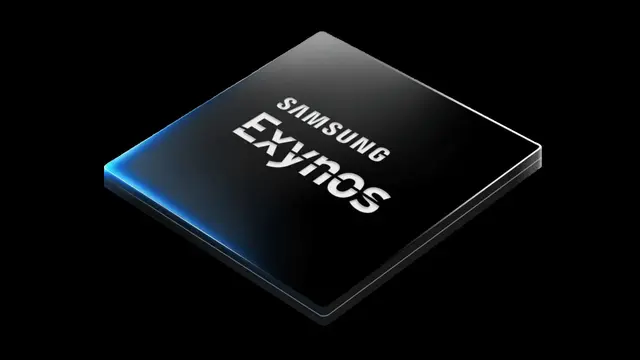

Dibekali Kemampuan Ray Tracing, Exynos 2400 Bikin Grafis Jadi Lebih Realistis!
Tanggal :
21 Des 2023, 16:10 WIB
Jakarta Industri teknologi terus berinovasi dan membawa pengalaman multimedia ke level yang lebih tinggi.
Salah satu kemajuan terbaru yang memikat perhatian para penggemar teknologi adalah kehadiran Exynos 2400
dari Samsung.
Samsung pun telah membocorkan kehebatan Exynos 2400 yang akan menjadi the next flagship chipset di tahun
depan, tepatnya Januari 2024. Chipset tersebut bisa menjadi unggulan yang akan memimpin perubahan dalam
visualisasi grafis pada perangkat mobile.
Salah satu fitur utama pada Exynos 2400 adalah kemampuan ray tracing yang mampu memberikan pengalaman
grafis lebih realistis. Dengan kehadiran teknologi ray tracing, pengguna dapat merasakan grafis yang lebih
hidup dan mendalam serta menghadirkan dunia virtual dengan detail yang mencengangkan.
Selain itu, teknologi ini juga memungkinkan perangkat untuk merender cahaya dan bayangan dengan presisi
yang belum pernah terjadi sebelumnya sekaligus menciptakan tampilan yang mirip dengan kehidupan nyata.
Saat bermain game atau menonton konten multimedia, Exynos 2400 pun memberikan pengalaman visual yang tak
tertandingi. Kelebihan ray tracing pada chipset ini tidak hanya terasa pada permainan, tetapi juga pada
aplikasi desain grafis dan konten kreatif lainnya.
Lebih Baik Dibanding Sebelumnya
Chipset terbaru ini menjanjikan peningkatan performa yang signifikan dibanding model sebelumnya Exynos
2200, termasuk peningkatan kemampuan ray tracing-nya. Exynos 2400 pun semakin membuka pintu untuk
kreativitas yang lebih besar dan pengalaman pengguna agar lebih mendalam dalam menjelajahi dunia digital.
Samsung membocorkan bahwa performa CPU pada chipset Exynos 2400 ini meningkat 1,7x dan lebih tinggi 14,7x
di sektor pengolahan kecerdasan buatan (AI). Untuk pengolahan grafisnya, Exynos 2400 mengandalkan GPU
Xclipse 940 yang berbasis arsitektur AMD RDNA 3.
Menariknya, GPU ini memiliki kemampuan untuk melakukan perhitungan ray tracing secara real-time. Dengan
adanya ray tracing itu, bayangan, refleksi, dan pencahayaan dapat ditampilkan secara jauh lebih realistis
dan tampak nyata terlihat lebih alami.
Teknologi tersebut pun bisa dirasakan secara langsung bagi para pencinta game mobile. Pasalnya, game
mobile yang dimainkan tidak lagi terbatas pada tampilan dua dimensi; sebaliknya, grafis yang lebih
realistis dan detail yang lebih mendalam menciptakan pengalaman yang mendebarkan.